Shorts Bot
A personal automation tool for one YouTube channel.
Shorts Bot runs on its owner's own computer. It writes short, calm videos about facts from nature, voices them, adds stock footage and captions, and uploads the finished Shorts to the owner's channel @WeshAlTrend through the YouTube Data API.
How it uses YouTube
- The channel owner signs in once with Google and grants a single permission: uploading videos (
https://www.googleapis.com/auth/youtube.upload). - The app only uploads videos it created, with their title, description, tags and publish time. It does not read, change or delete anything else on the account.
- The app is not offered to other people and has no other users.


Read the Privacy Policy and the Terms of Service. Using the app means agreeing to the YouTube Terms of Service; Google's handling of data is described in the Google Privacy Policy.
بالعربي
Shorts Bot أداة شخصية تشتغل على جهاز صاحب القناة. تسوي مقاطع قصيرة هادية عن حقائق من الطبيعة وترفعها على قناته في يوتيوب عن طريق YouTube Data API. ما تطلب إلا صلاحية رفع الفيديوهات، وما تقرأ ولا تغير أي شي ثاني في الحساب.